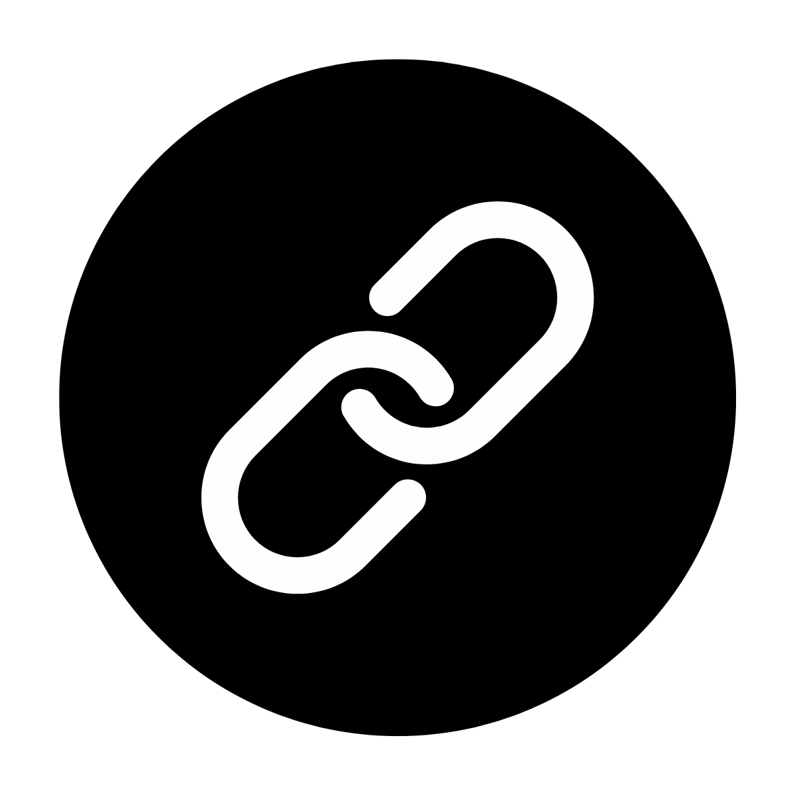
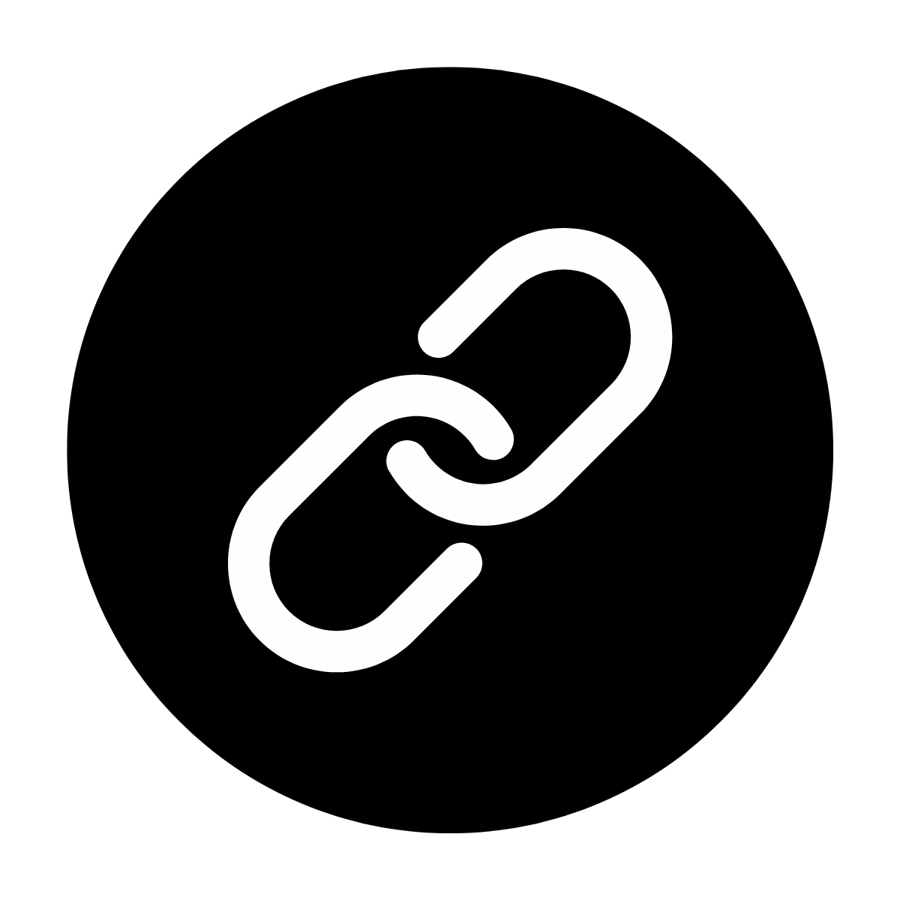

Coding Projects
Personal Projects
-
🌨️ 3D visualization for hydrological extremes Jun 2021 - Aug 2021ğŸ Python | 🪠Jupyter Notebook | cartopy | netCDF | plotly
- · The models here map out the wetness percentile of three different layers: surface soil moisture, root zone soil moisture, and groundwater.
-
🌕 Lunar Water-Ice Investigation Jun 2021 - Aug 2021🟠Blender
- · Collaborate with students in different disciplines to design a mission space concept.
- · Research and develop methods of obtaining water/ice deposits in the lunar South Pole Region.
- · Credits goes to Team 18 of Mission Concept Academy.
-
Bidirectional Path Tracing Apr 2021 - May 2021╠C++ | 🟣 Visual Studio
- · Implemented a physically based rendering algorithm in C++ to simulate realistic global illumination
- · Designed and connected light and camera sub-paths, incorporating advanced features like Multiple Importance Sampling (MIS) to reduce noise and improve convergence
- · Evaluated rendering performance by comparing custom 3D Blender scenes using Bidirectional Path Tracing against traditional Path Tracing, highlighting improved lighting in complex, low-probability light transport scenarios
-
💌 Slackr Nov 2020 - Dec 2020🟪 Kotlin | Android Studio | XML | Firebase
- · Developed a mobile social networking app inspired to connect students for study sessions and peer collaboration
- · Implemented core features including user authentication, profile creation, real-time swipe matching, and chat functionality using Firebase backend services
- · Collaborated using Git version control, and debugging tools within Android Studio to deliver a fully functional prototype
-
🤳 AR Storybook Oct 2020 - Nov 2020#ï¸âƒ£ C#| 🮠Unity | Vuforia
- · A very simple marker-based AR application.
-
⚔️ Classical Music and Beat Saber Clone May 2019 - Dec 2019#ï¸âƒ£ C# | 🮠Unity | Oculus Quest
- · Designed and developed an immersive VR rhythm game, themed around classical music and cultural engagement
- · Created interactive gameplay mechanics that synced player movement with music, encouraging exploration of classical compositions through rhythm-based challenges
- · My first beginner's VR Project. Also made the workshop video but it crashed in the end because i was running recording, discord stream, and unity at the same time so rip. The demo is just the bare bones of it.
-
🕹️ AutoHotkey Scripts Jun 2018 - Aug 2018AutoHotkey
- · Macros used to grind money in a video game.
-
💠High School Themed Visual Novel Sep 2017 - Aug 2018#ï¸âƒ£ C# | 🮠Unity
- · A game made in unity. Daydreaming about your first day of High School... Credits WHS Game Dev Club for Teamwork
-
😹 Scratch Projects Mar 2018 - Apr 2018😹 Scratch
- · High School Course: Foundations of Computer Science
-
🧛🏻‍♀️ VampKatsuvania May 2017 - Jun 2017🟨 JavaScript | 👩🏿‍💻 Code.org
- · Castlevania parody game.
-
🵠Simple Music Learning App Mar 2017 - Apr 2017🟨 JavaScript | 👩🏿‍💻 Code.org
- · One of my first time coding using Code org. Learning how to read notes on a staff.
 
